Lab No 1: Introduction to Python using ArcGIS Online
Perhaps one of the fastest and easiest way to start with python as spatial data scientists for you is to create a notebook in ArcGIS Pro and use it to run some Python code. In here you don’t need to install any python environment as everything comes as part of the installation of ArcGIS Pro. We will work this way, so you are familiar with python and then we will move to more advance instructions later.
Setting up the ArcGIS Pro Project
In Moodle download the file PY4SA_Week5.ppkx in PY4SA Lab Week 5 to a location on your lab computer.
The file contains an ArcGIS Pro package that includes, maps, a database combined.
In this lesson the data is shown at specific folder. You can use a different folder, but be sure to adjust the paths in the instructions that follow.
Find the PY4SA_Week5.ppkx file (likely in the Downloads folder), and double click to open it using ArcGIS Pro.
ArcGIS Pro will probably ask you to sign In, click in the blue button University of St Andrews to authenticate using your university credentials.
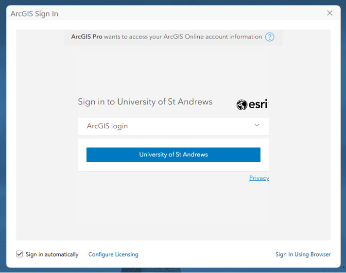
Add your university email and password. And then let ArcGIS Pro start and unpack the PY4SA_Week5 project
The project loads a map called PY4SA_Starting_with_Python showing the Edinburgh Wards and trees from Open Street Map, you can see more and more details when you zoom in to the map, take a sort time to familiarise yourself with the data and the map. You will add other feature classes (the ArcGIS version of a Shapefile) to this map.
Accessing the Catalog Pane
If the Catalog pane is not already visible, click the View tab and click Catalog Pane.
Dock the Catalog pane to the right of the map.
Expand Databases folder and then py4sa.gdb geodatabase.
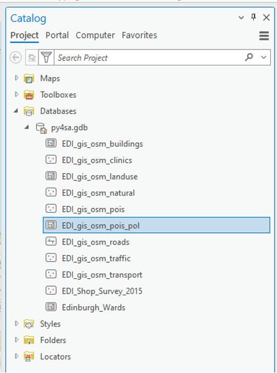
The geodatabase contains several feature classes, including spatial data from Open Street Map (OSM) and the Edinburgh Open Data Geo Portal.
Creating a Python Notebook
On the ribbon, click the Analysis tab, and in the Geoprocessing group, click the drop-down arrow for the Python button and click Python Notebook.
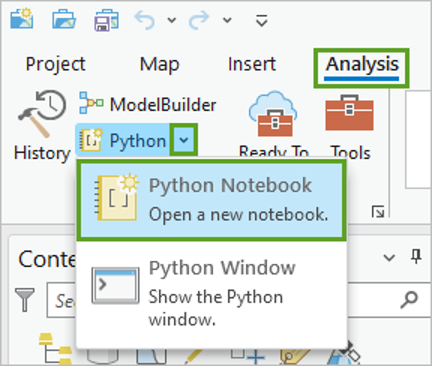
Clicking the Python button also opens a new notebook, but the drop-down menu allows you to see that you have a choice between Python Notebook and Python Window. The Python Window is another way to run Python code in ArcGIS Pro.
It may take a moment for the new notebook to appear, and you may see the message Initializing Kernel on the screen while you wait. This means ArcGIS Pro is getting ready to run code in the notebook. The kernel is software running in the background that will run the Python code you enter in the notebook. Do not panic!
Once the notebook opens, it appears as a new tab in the main window of ArcGIS Pro.
The new notebook is stored as an .ipnyb file in your project home folder. The new notebook also appears under the Notebooks folder in the Catalog pane.
Running Your First Python Code
Click inside the empty cell in the notebook.
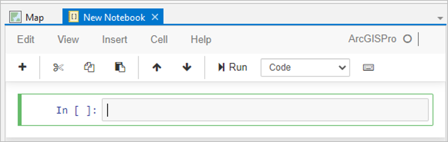
The outline turns green.
Type the following line of code:
print("Hello Notebook!")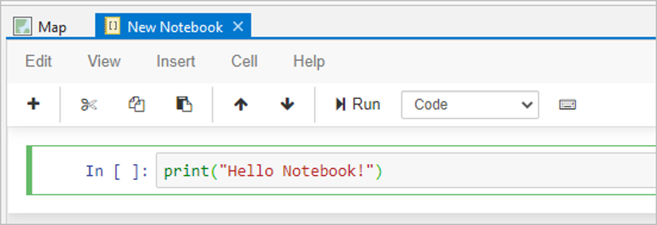
This code calls the print function on a single input parameter within the parentheses. This parameter is a string, because it is enclosed in quotation marks. Strings are an important and useful type of data that you can work with in Python.
On the toolbar above the cell, click the Run button.
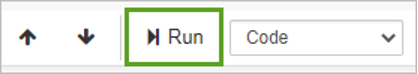
The code in the cell is run and the result is printed below the cell. The print function runs on the string value “Hello Notebook!” and prints it. The quotation marks are not printed, because they are not part of the string—they only identify it as a string. The number 1 appears in the brackets to the left of the cell. A new empty cell is added below.
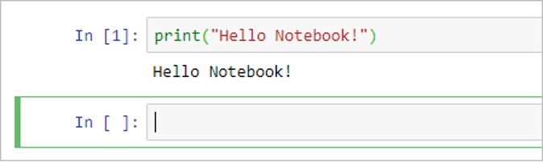
You can also run the currently selected cell by pressing Ctrl+Enter.
You can add multiple lines of code within a single cell by pressing the Enter key after each line. This may be counterintuitive if you are used to running code in the Python window or in the interactive window of a Python editor, where pressing the Enter key results in running the line of code.
Working with Variables
In the cell below your Hello Notebook! code, type the following lines of code:
a = 5 b = 7 c = 9 print(a * b * c)This code creates three variables, a, b, and c, and assigns their values to be equal to the numbers 5, 7, and 9. The last line prints the result of multiplying the variables.
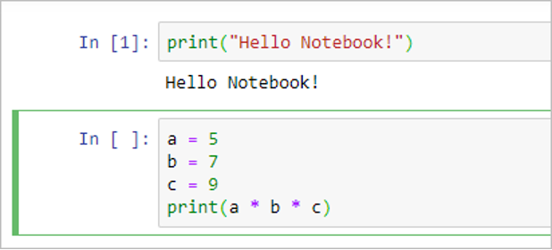
Press Ctrl+Enter.
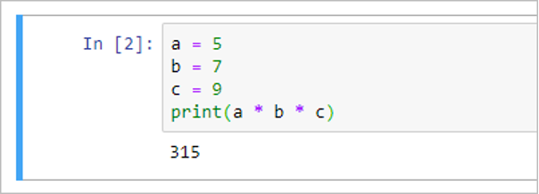
After the cell runs, the value 315 appears below it. The number 2 appears in brackets to the left of the cell to indicate that this is the second cell run.
At the top of the notebook, click the Insert menu, and click Insert Cell Below.
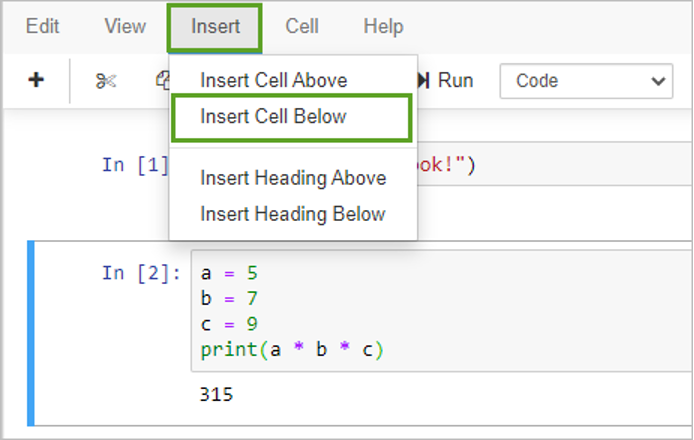
A new cell is added below the currently selected cell.
In the new cell, type the following line of code:
a * b * cWhat do you think this will do when you run the cell?
Run the cell and look at the result.
Did the result match your expectation?
The values of the variables a, b, and c are stored in memory after you set them, so you can use them in another cell.
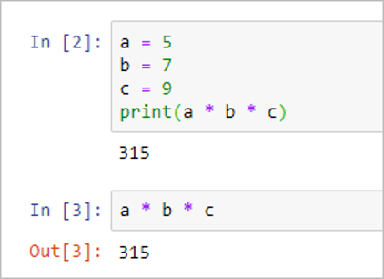
The result of multiplying the values stored in a, b, and c is printed when you run the cell.
The print statement is not required because in a notebook, the Python window, and in the Python interpreter, Python evaluates simple expression statements and prints their value.
Understanding Variable Scope and Errors
If you ran the cell by pressing Ctrl+Enter, insert a new cell below it.
If you ran the cell by pressing the run button, there should already be a new cell below it.
In the new cell, type the following line of code:
a * tWhat do you think this will do when you run the cell?
Run the cell and look at the result.
Did the result match your expectation?
Variable a has been set to the numeric value of 5, but the new variable t hasn’t been set yet. This causes an error. In Python, you can’t use variables until you assign their values.
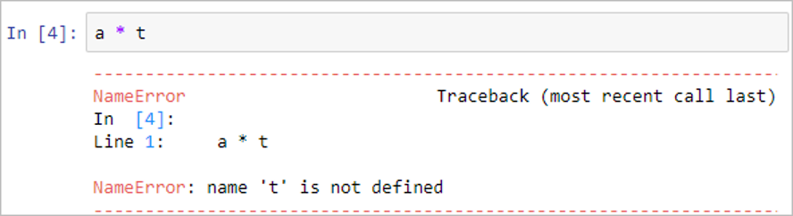
Edit the code in the cell as follows:
a * "t"What do you think this will do when you run the cell?
Run the cell and look at the result.
Did the result match your expectation?
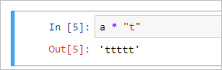
By putting t in quotation marks, you have identified it for Python as a string. Python evaluates the expression as the string t five times, resulting in the new string value ‘ttttt’.
Add a new cell and enter the following code:
t = 10 a * tWhat do you think this will do when you run the cell?
Run the cell.
Did the result match your expectation?
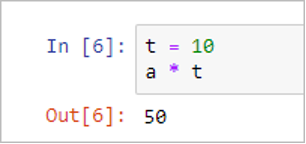
Because the first line in the cell defined the variable t as being equal to the number 10, Python was able to multiply it by the value stored in the variable a.
Sum-up: You’ve opened a new notebook in ArcGIS Pro and added and run some basic Python code. Next, you will use notebook functions to manage the code in the cells.
Manage code in cells
The code in Notebooks is run in cells. The order in which cells have been run is indicated by the numbers beside the cells after they are run. Notebooks have tools to manage cells. Now you’ll explore these aspects of working with Python in a notebook.
Working with Lists
In the next empty cell (add a new one if you need to), type the following line of code and run the cell.
mylist = [1, 2, 3, 4, 5]What happened?
This code defined a new variable and set its value, but did not print anything.
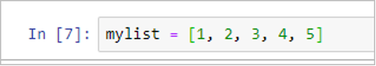
The variable mylist is a list, as indicated by the square brackets. Lists are an important data type in Python that consist of a sequence of elements. In this case, those elements are numbers, but lists can also contain other types of data. Elements in a list are separated by commas.
In the next empty cell, type the following code and run the cell.
mylist[-1]What happened?
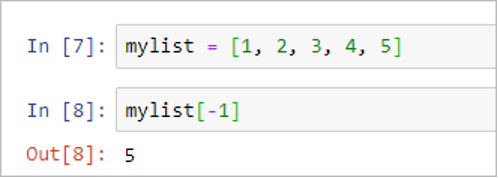
Elements in a list are indexed, starting with index number zero. You can obtain specific elements in a list by using their index number. Index number -1 means the first elements starting from the end of the list—in other words, the last element. This returns the number 5.
As you have seen, the cell input and output prompts show a number after the cell has been run. This number starts at 1 and increases for additional cells. The number increases every time you run a cell, including when you run a previously run cell again. The numbers help you keep track of the order in which the cells were run.
Understanding Cell Execution Order
Change the code in the cell defining the mylist variable to the following by adding more elements, but don’t run the cell.
mylist = [1, 2, 3, 4, 5, 6, 7, 8]Click the cell below this one, with the code
mylist[-1]and click the Run button.Does what happened match what you expected?
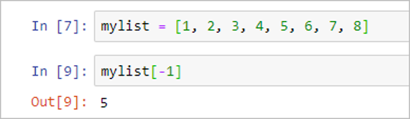
The result is the number 5. Why isn’t it the number 8?
Code in a notebook is entered cell by cell and any previously used variables are stored in memory.
Until you run the cell with the code that redefines the mylist variable, the value of mylist is still the value stored in memory, [1, 2, 3, 4, 5], and the value at position -1 in that list is still 5.
Click the cell with
mylist = [1, 2, 3, 4, 5, 6, 7, 8]and run it.Click the cell with
mylist[-1]and run it.Now the value in the last position of the list is 8.
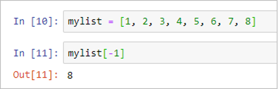
An alternative to running individual cells is to select multiple cells and run them together, or to run all the cells in a notebook by clicking the Cell menu and clicking Run All.
It is a good practice to organize lines of code that belong together in the same cell. For example, it would make sense for the two previous cells to be combined into a single cell. You can manually copy and paste code from one cell to another, but you can also combine cells.
Merging Cells
Click the cell that defines the mylist variable.
That cell has
mylist = [1, 2, 3, 4, 5, 6, 7, 8]in it.Click the Edit menu and click Merge Cell Below.
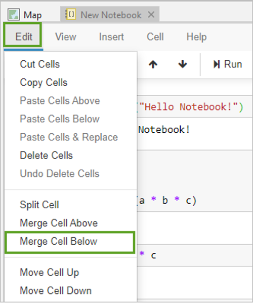
The result is a single cell with the combined lines of code. The results below the cells have been removed. An empty line is added between the lines of code from the two merged cells, but you can edit the cell to remove it if you want.
Run the merged cell.
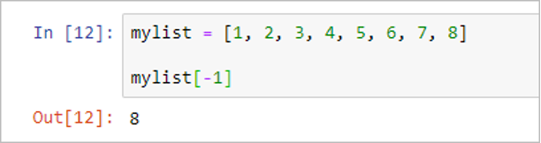
The Edit menu provides many other useful ways to manipulate the cells in your notebook. You can copy and paste cells, delete them, split and merge them, and move a selected cell up or down relative to the other cells.
Additional tools are available under the View, Insert, and Cell menu options.
Some of the most widely used tools are also available as buttons on the notebook toolbar.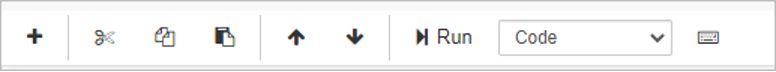
These include the following:
- Insert cell below
- Cut selected cells
- Copy selected cells
- Paste cells below
- Move selected cells up
- Move selected cells down
More tools can be found on the Command Palette.
Using the Command Palette
Click the Command Palette button.
A list of commands appears.
You can run a command by clicking it. The command is applied to the selected cells in the notebook, or to all cells, depending on the command.
In the Command Palette, click clear all cells output.
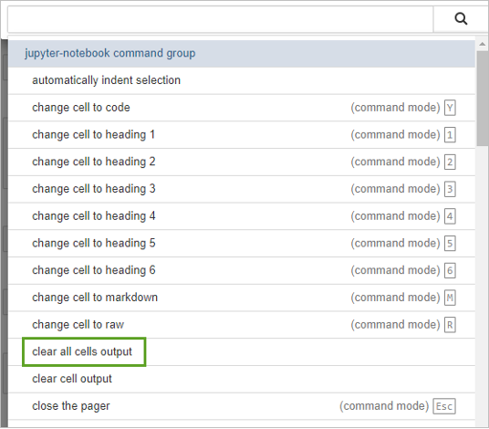
All code remains the same, but all outputs have been removed. The input and output prompts are blank, since none of the cells have been run. When you run a cell, the prompts start again at 1.
The Command Palette also show shortcuts for many of the tasks.
Keyboard Shortcuts
Click the Command Palette button and scroll down to insert cell below.
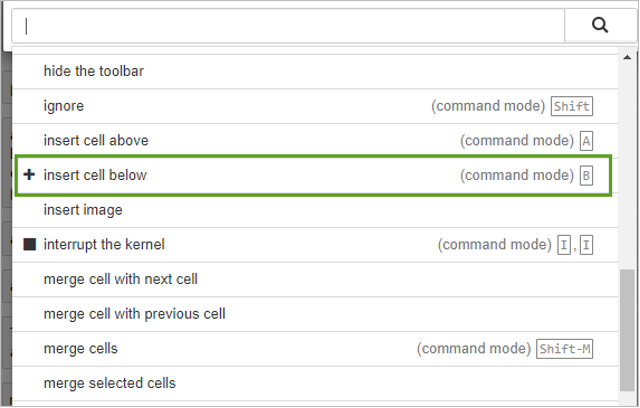
The keyboard shortcut for this command is listed to the right of it. The shortcut is the letter B when the notebook cell is in command mode.
Hide the Command Palette by clicking outside of the palette but inside the notebook.
Click the space to the left of the second cell, so it turns blue.
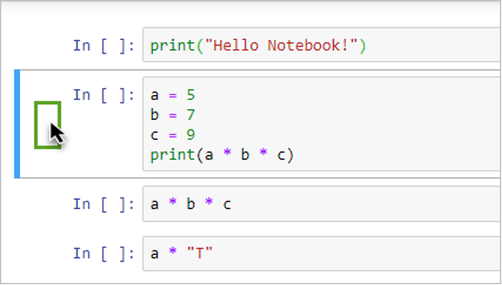
Be sure not to click inside the code section, which will turn the cell green.
The cell border is blue to indicate that it is in command mode.
Press the B key on your keyboard.
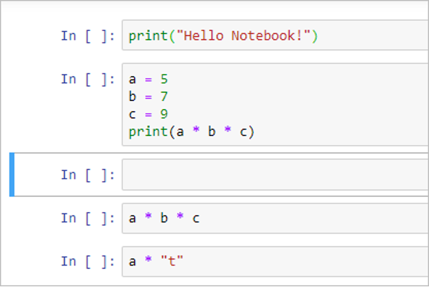
A new cell is inserted below the selected cell. If the cell had been green, you would add the letter b to the code in the cell.
These shortcuts are not case sensitive, so b and B are the same.
There is no need to memorize these commands, but experienced coders memorize and use some of them to speed up their work. For most basic tasks, the buttons and menu options in the notebook work well.
If you are looking for the command for a specific task, you can search for it by using the search bar at the top of the Command Palette.
Open the Command Palette and type run in the Search box.
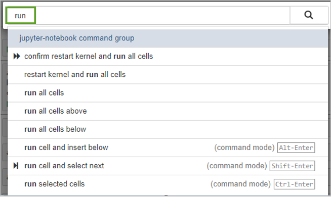
This filters the list to the tools with run in their name. Some commands have a shortcut. For example, the shortcut for run selected cells is Ctrl +Enter.
Hide the Command Palette by clicking outside of the palette but inside the notebook.
Close the notebook.
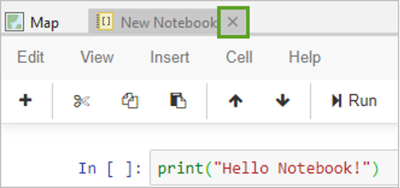
You’ve seen how to enter and edit Python code in notebook cells, and how to interact with the notebook to run and manage the code. Next, you’ll use a notebook to run geoprocessing tools in ArcGIS Pro.
Run geoprocessing tools in a notebook
Now that you’ve had some practice entering code in a notebook, it is time to use some geoprocessing tools. You will start with a new notebook.
Creating a New Notebook for Geoprocessing
Click the Analysis tab, and in the Geoprocessing group, click Python.
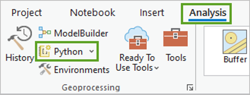
The new notebook opens.
In the Catalog panel, expand the Notebooks section.
Right-click the new notebook, New Notebook (1).ipynb, and click Rename.
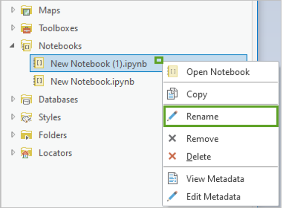
Type
geoprocessing_demoand press Enter.The new notebook is renamed. In the Catalog pane, you can see that the .ipynb file extension was automatically added to the name. The notebook tab now says geoprocessing_demo.
For the next steps, it is useful to see the map and the notebook side by side.
Drag the geoprocessing_demo notebook tab to the docking target that appears below.
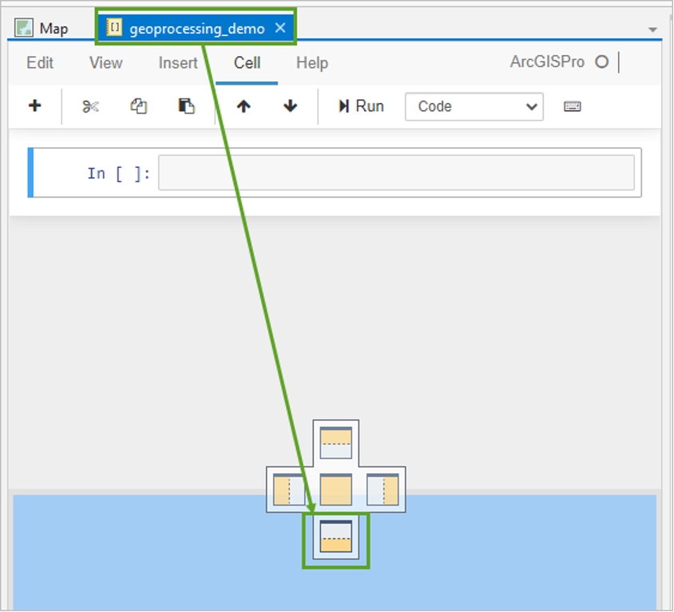
The notebook is docked below the map. Now you’ll be able to see the results of your code as you use Python in the notebook to work with feature classes on the map.
Importing ArcPy and Running Geoprocessing Tools
In the empty cell, type the following line of code and run the cell:
import arcpyThis line of code imports the ArcPy package. ArcPy is a Python package that makes much of the functionality of ArcGIS Pro available from within Python, including geoprocessing.
Since you are using this notebook in ArcGIS Pro, code that uses geoprocessing tools will not produce an error if you have not imported ArcPy. However, it is good practice to always include
import arcpyat the top of your geoprocessing code so it will also work when run outside of ArcGIS Pro.In the same cell, add a new line and type the following code:
arcpy.GetCount_management("EDI_gis_osm_natural")This code uses ArcPy to run the Get Count tool to determine the number of features in the EDI_gis_osm_natural feature class.
Run the cell.
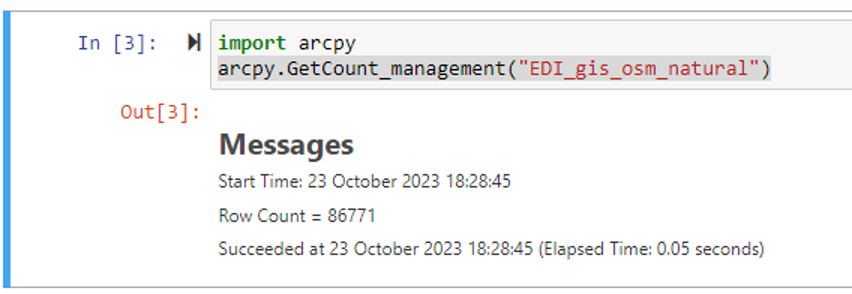
GetCount is a function of ArcPy that runs the Get Count geoprocessing tool located in the Data Management Tools toolbox.
The result appears below the code cell. There are 86771 rows (features) in the feature class. These results are very similar to the messages you see after running a tool using the tool dialog box in ArcGIS Pro. Notebooks are integrated in the geoprocessing framework of ArcGIS Pro. This means that running a tool in a notebook is like running a tool using the tool dialog box. Any tool that you run in a notebook also appears in the History panel.
Click the Analysis tab and click History.
The tool appears in the geoprocessing history.
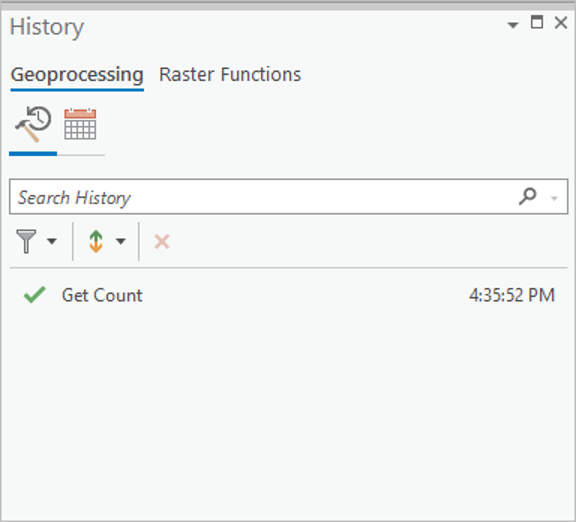
Close the History panel
Understanding File Paths and Workspace
Edit the
arcpy.GetCountcode line to the following:arcpy.GetCount_management("EDI_gis_osm_building")Run the cell. Are you getting any error?
In case this code fails with an error message. At the end of the message, the following information appears:
ExecuteError: Failed to execute. Parameters are not valid.
ERROR 000732: Input Rows: Dataset EDI_gis_osm_building does not exist or is not supported
Failed to execute (GetCount)
Why do you think the code failed, when the code to get the count of natural features worked?
The EDI_gis_osm_natural feature class is a layer on the active map. In a notebook, you can refer to a dataset by the name of the layer in the active map, like you can when you run a geoprocessing tool interactively using its graphical user interface.
The EDI_gis_osm_building feature class is not present as a layer in the active map, and it is also not a feature class in the default geodatabase for the project. You can refer to a feature class that is not in the active map or default geodatabase by specifying the full path to it.
Next, you’ll look up the path to the EDI_gis_osm_buildings (this layer does exist) feature class. The path where the data is located is a key aspect in python so now let’s explore how you can know where the data is stored and then use the correct path in your scripts.
In the Catalog pane, expand the Databases section and expand PY4SA.gdb.
Right-click EDI_gis_osm_buildings and click Properties.
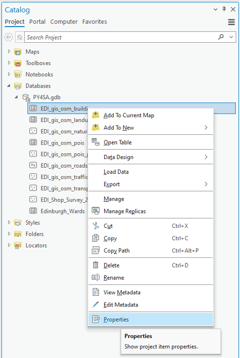
Click the column next to Database and select the full path to the geodatabase.
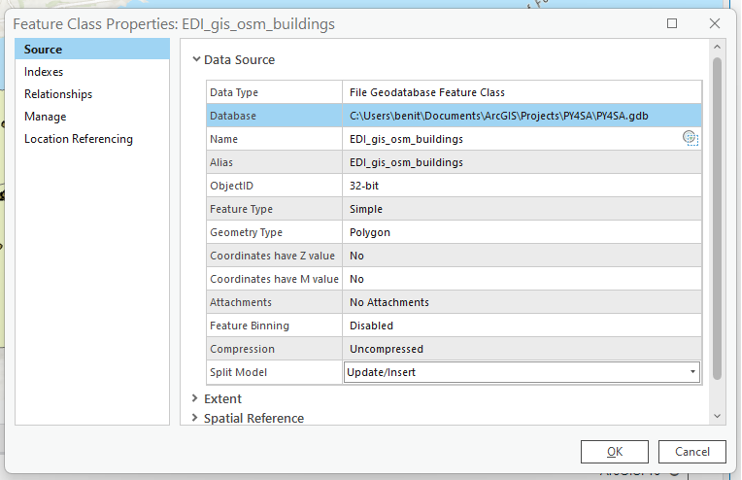
Right-click the selected path and click Copy, and then close the Properties dialog box.
The path in this example is as follows:
C:\Users\benit\Documents\ArcGIS\Projects\PY4SA\PY4SA.gdbThe path on your computer will be different, depending on where and how you unzipped the .zip file with the data. You may not have put the data in a folder on your drive C, or inside a folder named Lessons, for example. You should use the path on your computer in the next step.
Click in the notebook cell and update the path that you copied. But make sure you add a backslash \ between the path you copy and the name of the feature class.
arcpy.GetCount_management("C:\Users\benit\Documents\ArcGIS\Projects\PY4SA\PY4SA.gdb\EDI_gis_osm_buildings")Click immediately after the open parenthesis and before the first quotation mark, and type the letter r.
arcpy.GetCount_management(r"C:\Users\benit\Documents\ArcGIS\Projects\PY4SA\PY4SA.gdb\EDI_gis_osm_buildings")You need to add the letter r to tell Python that this path is a raw string. Windows computers use the backslash character as a path separator. In Python, the backslash character is an escape character that, when next to some other characters in a string, encodes tab, new line, or other special characters. This means that where occurs beside in the path, Python reads the string as having a new line character. Placing the r before the string tells Python to ignore the escape characters.
Run the cell.
The Get Count tool runs and returns a message that there are 158029 features in the feature class.
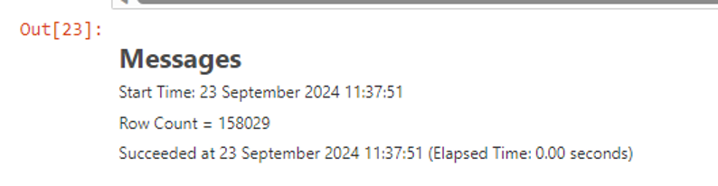
You can also use a forward slash (/) character as a path separator in Python code, or you can double the backslash characters.
The following are all valid ways of writing this path in Python:
r"C:\Lessons\NotebookStart\Toronto.gdb\ambulances" "C:/Lessons/NotebookStart/Toronto.gdb/ambulances" "C:\\Lessons\\NotebookStart\\Toronto.gdb\\ambulances"If you use a forward slash (/) or double backslash (\) as your path separator, you do not add the r before the path string.
For someone who is used to Windows paths delimited by backslashes, this can look a little strange at first, but it is important to remember.
One way to avoid having to specify full paths for tools is to set the workspace.
Setting the Workspace
Edit the code to add a new line between the two lines beginning with
import arcpyandarcpy.GetCount. Add the following line:arcpy.env.workspace =This line is setting a property of the environment class, arcpy.env, to be equal to some value. Next, you’ll cut the path to PY4SA.gdb and paste it after this code to set the path.
Add the path to the PY4SA geodatabase. For example:
arcpy.env.workspace = r"C:\Lessons\NotebookStart\PY4SA.gdb"Run the cell.
To validate the workspace has been properly defined add a new cell and run the following line:
arcpy.env.workspaceYou should get the path you defined as your workspace in this python environment.
Run an analysis using a notebook
Next, you will do some GIS analysis work using the notebook. Suppose you are interested in finding out what areas within the Edinburgh_Wards are farthest from clinics in Edinburgh. You can use geoprocessing tools in a notebook to identify these areas.
Using Tab Completion and Tool Signatures
Add a new cell below the current one.
Place the cursor inside the cell and start typing the following:
arcpy.Press the Tab key.
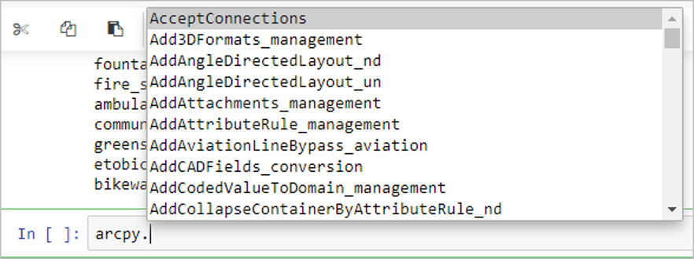
A list of all of the available ArcPy options appears.
You can scroll down and click an item to select it from this list, or you can continue typing.
Type an uppercase B.
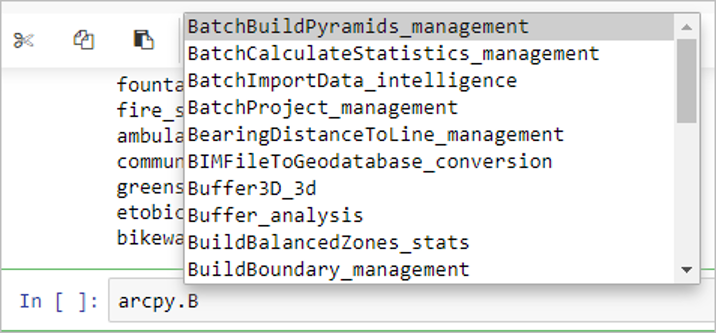
Click Buffer_Analysis.
The cell now says
arcpy.Buffer_analysis.This process of beginning to type some code and then pressing the Tab key to see and choose from matching options is called tab completion, and it can help you find and more quickly access the commands you need.
With your cursor still at the end of the line of code, press Shift+Tab.
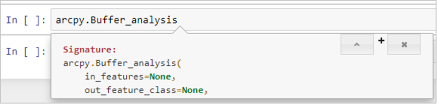
A window with the syntax hints for the Buffer_analysis tool appears. You can click the arrow button to expand it to read the whole topic.
Click the close button to close the Signature window.
Type an open parenthesis.
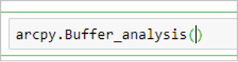
A close parenthesis is also added, and the cursor is placed between them. This is where you can add parameters for the Buffer_analysis tool.
Type a quotation mark.
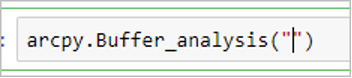
A second quotation mark is added. Python needs strings to be enclosed in quotation marks, so it adds a matching quotation mark, with the cursor between them.
The three parameters that the Buffer_analysis tool requires are the input feature class, the output feature class, and the buffer distance. There are other optional parameters, but these are the only ones that are required.
You’ll buffer the EDI_gis_osm_clinics feature class, name the output feature class clinic_buffer, and make the tool buffer the fire stations by a distance of 1000 meters.
Complete the line of code as follows:
arcpy.Buffer_analysis("EDI_gis_osm_clinics","clinic_buffer ","1000 METERS")The three parameters of the tool are strings. The tool is able to locate the EDI_gis_osm_clinics feature class using only its name because it is a layer on the map. The tool is able to write an output feature class using only the name “clinic_buffer” because the workspace is set. The tool has logic built in to detect the buffer distance value and the units of measure in the string “1000 METERS”.
Run the tool.
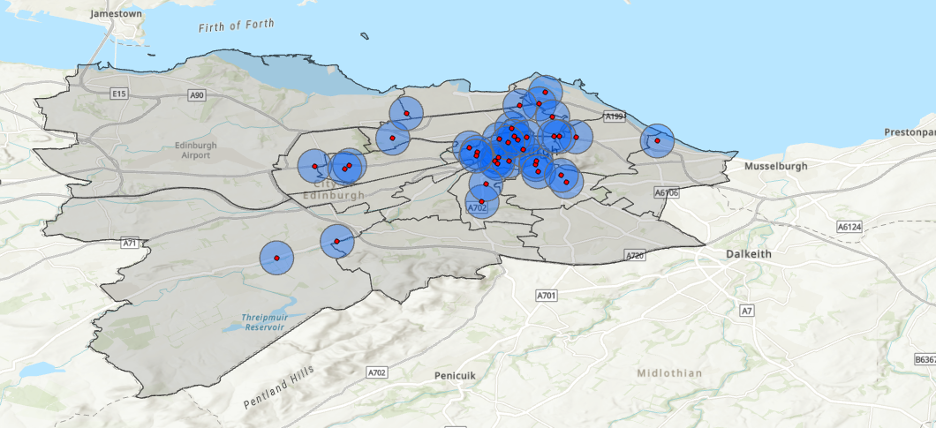
The output features are added to the map.
The results show which areas fall within 1000 meters, or 1 kilometre, of a clinic and which areas do not. Having both the notebook and the map open at the same time makes it easy to see the results of different choices.
You probably need to hide the EDI_gis_osm_natural layer and add the EDI_gis_osm_clinics to the map, so you can see the buffer areas created around each clinic in Edinburgh.
Now, change the buffer distance to 1750 meters and run the cell again.
arcpy.Buffer_analysis("EDI_gis_osm_clinics","clinic_buffer","1750 METERS")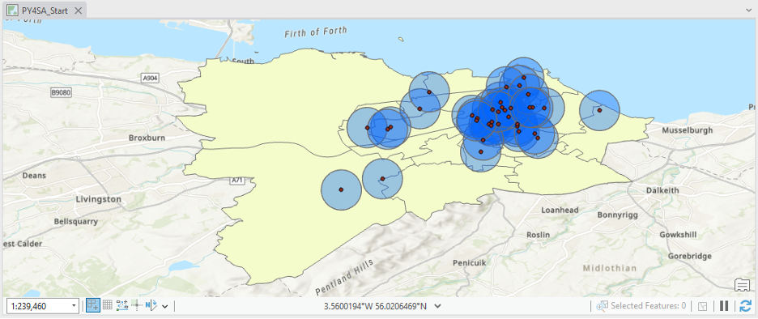
Note: If you get an error message, “ExecuteError: Failed to execute. Parameters are not valid”, that mentions that clinic_buffer already exists, then your ArcGIS Pro environment settings, geoprocessing options are not set to allow existing feature classes to be overwritten. To fix this issue, insert a new line in the cell before the arcpy.Buffer_analysis line. On the new line, add the following code:
arcpy.env.overwriteOutput = TrueThis will allow the Buffer tool to overwrite the previous output. The cell should now contain:
arcpy.env.overwriteOutput = True arcpy.Buffer_analysis("EDI_gis_osm_clinics","clinic_buffer","1750 METERS")Run the cell.
The areas outside of these buffers are further away from the clinics, which may increase the time it takes for an ambulance to respond to a call. To find the areas that are affected, rather than the parts that are not, you will use the erase tool to remove the areas within the buffers from the Edinburgh Wards feature class.
Using the Pairwise Erase Tool
Add another cell and enter the following code:
arcpy.PairwiseErase_analysis("Edinburgh_Wards", "clinic_buffer", "no_service")This calls the PairwiseErase_analysis tool on the Edinburgh_Wards feature class, erasing the areas within the clinic_buffer feature class from it, and writing the results to a new feature class named “no_service”.
Run the cell.
In the Contents pane, uncheck the all layers, except clinics and no_service.
Right-click the no_service layer and click Zoom To Layer.
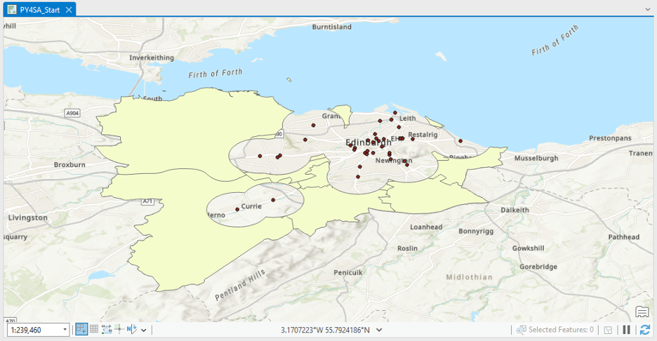
The no_service layer shows places that are farther from clinics in Edinburgh.
Merging Cells for Workflow Efficiency
Click the arcpy.PairwiseErase_analysis cell, and in the Notebook pane, click the Edit menu and click Merge Cell Above.
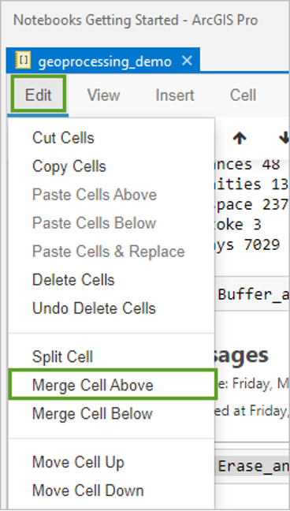
The cells are merged.
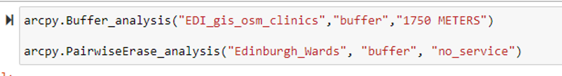
A benefit of Notebooks, and Python code in general, is that you can quickly run a sequence of tools. In this case, the sequence only consists of two tools, but it illustrates the concept.
Change the distance value from 1750 to 2500 and run the cell.
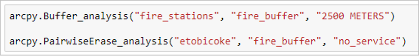
Turn off the new clinic_buffer layer to see the new no_service layer.
You may need to zoom to the layer to see the remaining smaller areas.
The resulting areas are potentially the most compromised in terms of clinic service. You were able to obtain this updated result by running the multiple lines of code as a single cell in the notebook. If you had used the tools from their graphical user interfaces, you would have needed to run both the Buffer tool and the Pairwise Erase tool again to obtain the updated result.
The time savings with only two tools is minor, but many workflow’s consist of longer sequences of tools. In addition, the ability to run a tool, or multiple tools, within a loop makes Python useful when you need to run the same process on multiple inputs.
Save your ArcGIS Pro project and close.
Create and save a Notebook in ArcGIS Online
- Go to our ArcGIS Online Organizational account https://uostandrews.maps.arcgis.com/ log in using your St Andrews email.
- Click Notebook to open a new ArcGIS Notebook.
![](.png)
- Click the New Notebook button and you will see a drop-down list with three options: Standard, Advanced, and Advanced with GPU support.
- Click Standard.
- It is a best practice to name and save the notebook when you create it.
- Click the Save button in the upper right of the notebook and then click Save As.
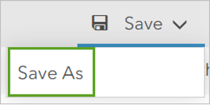
When prompted, give the notebook a title, such as My First Notebook followed by an underscore and your first and last initials; some tags, and a summary. Then click Save Notebook. This information will show up on the item page for your notebook in ArcGIS Online.
When you are working in notebooks in ArcGIS Online it is a good idea to save your work regularly.
Work with a notebook
Each new notebook starts with several markdown cells already populated and one code cell that calls the ArcGIS API for Python and connects you to ArcGIS Online. After that, you can add code and markdown cells to create your workflow.
1. Double-click the Welcome to your notebook cell to make it editable.
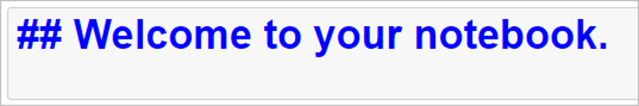
This is a markdown cell. Markdown is a lightweight, plain text formatting syntax that is widely used across the internet. After double-clicking the cell, the text appears in **blue** with two number signs (**##**) in front of it.
Markdown tag welcoming you to your new notebook.
2. While in the markdown cell, click Run.
This runs the cell and turn it into a header. You can also run cells by pressing Shift+Enter on your keyboard. Shift+Enter is the keyboard shortcut for running cells in a notebook.
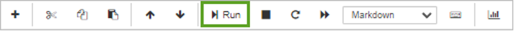
3. Click Open the command palette at the top of the notebook. This lists of all keyboard shortcuts.
4. Double-click the Welcome to your notebook cell. Insert two more number (**##**) signs in the cell before Welcome to your notebook. There are now four number signs. The additional number signs change the size of the header. Run the cell. The header becomes smaller.
5. Double-click the Welcome to your notebook cell again. Remove the two number signs from the header and press Enter. On the second line, type This is my first notebook and other other text that you may want to add. Then, click Run.
The header returns to its initial size and there is now text below that cell.
In any new notebook, the second cell will say Run this cell to connect to your GIS and get started. This is also a markdown cell. This cell directs you to run the code cell that follows it that connects you to ArcGIS Online.
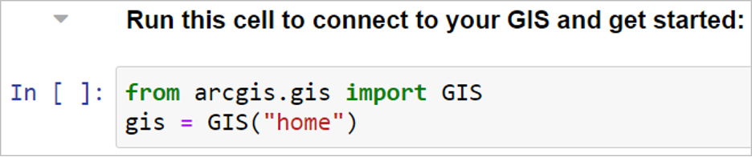
Run this cell at the beginning of every notebook that connects a user to ArcGIS Online.
6. Double-click in the code cell and run it.
While the cell runs, an asterisk is inside the brackets in the input area so it appears as In [*]. After the cell finishes running, the number 1 replaces the asterisk in the brackets so it appears as In [1]. The number in the brackets increases by one each time a code cell is run. You must run this cell. If you do not run this cell, the other code cells will not run.
Create a web map.
Now that you are familiar with markdown and have run the existing code, you’ll write and run some of your own.
1. On the ribbon click the plus (+) sign.
This creates a new cell beneath the code cell that you just ran. The new cell will appear below the currently selected cell.
2. Set that cell to be a markdown cell.
3. In the new markdown cell, type ### My First Map.
4. In the same cell, on the second line, add some text below the header that describes the code that you will write. When you are done entering text, run the cell.
5. Next, you will create a map in the notebook. Start by creating a new code cell.
6. In the new code cell, create a variable named my_first_map that represents the map and use the ArcGIS API for Python to set the variable to a web map that is centered over a specific location.
7. Set the variable equal to a web map centered on St Andrews, UK:
my_first_map = gis.map("St Andrews, UK")
8. Run the cell.
Now that you have named your variable, you will call it to create the map. Do this by creating a new code cell and then within that code cell, typing my_first_map and running that cell.
After that cell runs, your first map will appear in your notebook. You can change the location of the center of the map by going back to the previous cell, changing “St Andrews, UK” to a different location, and running the cell again, or you can pan and zoom around the current map.
Explore Content
In ArcGIS Notebooks, you can search for content and view item metadata. Next, you will search for a layer over Los Angeles and add it to the notebook.
1. On the ribbon click the plus (+) sign. To add a new cell underneath the my_first_map cell
2. Click the Add button.
The Add button opens the Add Content panel, which allows you to add an ArcGIS Online item as code directly to the notebook. If you have saved content in ArcGIS Online or ArcGIS Notebooks, that content is available from the Add Content panel to use in your notebook.
3. Click ArcGIS Online and type UK to search for all content related to the UK and available in ArcGIS Online. Add the UK SSP: Life Expectancy Layer to the notebook by clicking the add button (a plus sign).
A new code cell containing a code snippet, is added to the notebook beneath your map. This cell calls the layer as the variable item and loads its metadata. The code cell looks like the following:
4. Run this code cell. The item metadata is added as an object to the notebook below the cell, but it is not yet added to the map.
Next, you will learn some short cuts to write code and display relevant documentation.
5. Create a code cell below the item and call your map variable. Type my_ and press Tab.
Pressing Tab while typing a variable name activates the notebook’s autocomplete functionality. The line completes and displays my_first_map.
6. After my_first_map, type .ad so it appears as my_first_map.ad and press Tab.
The code is completed to be my_first_map.add_layer
7. Press Shift+Tab.
Pressing Shift+Tab opens the docstring. The docstring is a small piece of documentation for developers that describes what the method does.
After investigating the docstring, close it.
You can access the function’s help documentation by typing a question mark at the end of the function. For example, my_first_map.add_layer? will open the add_layer help documentation from the bottom of the notebook. Try this.
After reading the help documentation, close it.
8. In the same cell where you investigated the function signature of my_first_map, call the add_layer method and use it to add the Life expectancy item to the map. Run the cell. The cell code should appear as my_first_map.add_layer(item).
9. After the cell completes, scroll to the map in your notebook and verify that the new item with the new layer from Met Office has been added.
You have created your first map and added a layer to it using ArcGIS Notebooks. The map includes zoom buttons, a compass, and the option to change from a map view to a globe view.
Pan and zoom the map and use these buttons.
This is a live web map with the same functionality as the maps you use in ArcGIS Online.
With a few lines of code, you can save the map you created to ArcGIS Online. Web maps are defined by specific properties, such as the title, description (snippet), and tags. You can define the properties by creating a dictionary that contains them in Python code. Then, you can save the map as a web map.
10. In a new code cell, define the web map properties using the following dictionary. You can modify or change the title, snippet, or tags. Run the cell.
webmap_properties = {'title':'My First Map', 'snippet': 'My first map from my first notebook', 'tags':['ArcGIS Notebooks', 'UK']}
11. Create another cell where you will save the webmap. Add the following line: my_first_map.save(webmap_properties). Run the cell.
Running this cell creates an active link that will take you to the webmap item in ArcGIS Online. Click the active link and verify that the webmap was created in ArcGIS Online.
12. Click the Save button in the upper right of the notebook.
It is a good idea to save your work regularly when you work in notebooks hosted online. If there is no Python activity in the notebook for 20 minutes, the Python kernel will shut down, the notebook will stop working, and all variables in memory will be lost. Once you have restarted the kernel you will need to run all of the cells again, starting from the beginning, to restore the values.
13. Go to your Content, and check that now you have two new items in your portal. The notebook, that you can open and edit it with new code. And the new WebMap that you created using Python and the ArcGIS API for Python.
14. Click My First Map to open the details, and then click Open in Map Viewer. Then ArcGIS Online will launch a viewer to let you explore, edit and share the WebMap you have created.
Challenge for next class
Now that you have learned how to create a map, search for content, add layers, and save a webmap, use Python and ArcGIS Notebooks to create another web map that contains multiple layers that you are interested in. Save the webmap to ArcGIS Online.
Be ready to showcase this webmap during the next class showing what the map is about and the difficulties you had